정보처리기사(구) (2017-08-26 기출문제)
1과목: 데이터 베이스
1. 관계해석에 대한 설명으로 옳지 않은 것은?
- 수학의 프레디킷 해석에 기반을 두고 있다.
- 관계 데이터 모델의 제안자인 코드(Codd)가 관계 데이터베이스에 적용할 수 있도록 설계하여 제안하였다.
- 튜플 관계해석과 도메인 관계해석이 있다.
- 원하는 정보와 그 정보를 어떻게 유도하는가를 기술하는 절차적 특성을 가진다.
(정답률: 75%)

2. 색인 순차 파일에 대한 설명으로 옳지 않은 것은?
- 레코드를 참조할 때 색인을 탐색한 후 색인이 가리키는 포인터를 사용하여 직접 참조할 수 있다.
- 레코드를 추가 및 삽입하는 경우, 파일 전체를 복사할 필요가 없다.
- 인덱스를 저장하기 위한 공간과 오버플로우 처리를 위한 별도의 공간이 필요 없다.
- 색인 구역은 트랙 색인 구역, 실린더 색인 구역, 마스터 색인 구역으로 구성된다.
(정답률: 73%)
3. 뷰(VIEW)에 대한 설명으로 옳지 않은 것은?
- DBA는 보안 측면에서 뷰를 활용할 수 있다.
- 뷰 위에 또 다른 뷰를 정의할 수 있다.
- 뷰에 대한 삽입, 갱신, 삭제 연산 시 제약 사항이 따르지 않는다.
- 뷰의 정의는 ALTER문을 이용하여 변경할 수 없다.
(정답률: 81%)
4. 정규화의 목적으로 옳지 않은 것은?
- 어떠한 릴레이션이라도 데이터베이스 내에서 표현 가능하게 만든다.
- 데이터 삽입 시 릴레이션을 재구성할 필요성을 줄인다.
- 중복을 배제하여 삽입, 삭제, 갱신 이상의 발생을 야기한다.
- 효과적인 검색 알고리즘을 생성할 수 있다.
(정답률: 83%)
5. 트랜잭션들을 수행하는 도중 장애로 인해 손상된 데이터베이스를 손상되기 이전의 정상적인 상태로 복구시키는 작업은?
- Recovery
- Restart
- Commit
- Abort
(정답률: 87%)
6. 해싱함수 중 레코드 키를 여러 부분으로 나누고, 나눈 부분의 각 숫자를 더하거나 XOR한 값을 홈 주소로 삼는 방식은?
- 제산법
- 폴딩법
- 기수변환법
- 숫자분석법
(정답률: 69%)
7. 순서가 A, B, C, D로 정해진 입력 자료를 스택에 입력하였다가 출력할 때, 가능한 출력 순서의 결과가 아닌 것은?
- A, B, C, D
- C, D, B, A
- D, C, A, B
- B, C, D, A
(정답률: 79%)
8. 다음 설명이 의미하는 것은?
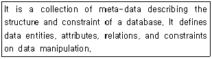
- Data Dictionary
- Primary Key
- Transaction
- Schema
(정답률: 74%)
9. Which of the following is a linear list in that elements are accessed, created and deleted in a last-in-first-out order?
- Queue
- Graph
- Stack
- Tree
(정답률: 78%)
10. DML에 해당하는 것으로만 나열된 것은?(일부 핸드폰에서 보기 내용이 보이지 않아서 괄호뒤에 다시 표기하여 둡니다.)
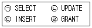
- ㉠, ㉡, ㉢(ㄱ, ㄴ, ㄷ)
- ㉠, ㉡, ㉣(ㄱ, ㄴ, ㄹ)
- ㉠, ㉢, ㉣(ㄱ, ㄷ, ㄹ)
- ㉠, ㉡, ㉢, ㉣(ㄱ, ㄴ, ㄷ, ㄹ)
(정답률: 81%)
11. 깊이가 4인 이진트리에서 가질 수 있는 노드의 최대 수는?
- 13
- 14
- 15
- 16
(정답률: 63%)
12. 다음 트리를 Preorder 운행법으로 운행할 경우 다섯 번째로 탐색 되는 것은?
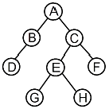
- C
- E
- G
- H
(정답률: 83%)
13. 트랜잭션의 특성으로 옳은 내용 모두를 나열한 것은?
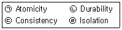
- ㉠, ㉡
- ㉠, ㉡, ㉣
- ㉠, ㉢, ㉣
- ㉠, ㉡, ㉢, ㉣
(정답률: 74%)
14. 선형 구조만으로 나열된 것은?
- 트리, 그래프
- 트리, 그래프, 스택, 큐
- 트리, 배열, 스택, 큐
- 배열, 스택, 큐
(정답률: 78%)
15. 힙 정렬에 대한 설명으로 틀린 것은?
- 정렬한 입력 레코드들로 힙을 구성하고 가장 큰 키값을 갖는 루트 노드를 제거하는 과정을 반복하여 정렬하는 기법이다.
- 평균 수행 시간복잡도는 O(nlog2n)이다.
- 입력 자료의 레코드를 완전이진트리(complete binary tree) 로 구성한다.
- 최악의 수행 시간복잡도는 O(2n4)이다.
(정답률: 60%)
16. 다음 자료에 대하여 선택(Selection) 정렬을 이용하여 오름차순으로 정렬하고자 한다. 3회전 후의 결과로 옳은 것은?
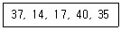
- 14, 17, 37, 40, 35
- 14, 37, 17, 40, 35
- 14, 17, 35, 37, 40
- 14, 17, 35, 40, 37
(정답률: 64%)
17. 병행제어의 로킹(Locking)의 단위에 대한 설명으로 옳지 않은 것은?
- 데이터베이스, 파일, 레코드 등은 로킹 단위가 될 수 있다.
- 로킹 단위가 작아지면 로킹 오버헤드가 감소한다.
- 로킹 단위가 작아지면 데이터베이스 공유도가 증가한다.
- 한꺼번에 로킹 할 수 있는 단위를 로킹 단위라고 한다.
(정답률: 81%)
18. 데이터웨어하우스의 기본적인 OLAP(on-line analytical processing) 연산이 아닌 것은?
- translate
- roll-up
- dicing
- drill-down
(정답률: 56%)
19. 데이터베이스 설계 단계 중 물리적 설계에 해당하는 것은?
- 데이터 모형화와 사용자 뷰들을 통합한다.
- 트랜잭션의 인터페이스를 설계한다.
- 파일 조직 방법과 저장 방법 그리고 파일 접근 방법 등을 선정한다.
- 사용자들의 요구사항을 입력으로 하여 응용프로그램의 골격인 스키마를 작성한다.
(정답률: 63%)
20. 시스템 카탈로그에 대한 설명으로 옳지 않은 것은?
- 사용자가 직접 시스템 카탈로그의 내용을 갱신하여 데이터베이스 무결성을 유지한다.
- 시스템 자신이 필요로 하는 스키마 및 여러 가지 객체에 관한 정보를 포함하고 있는 시스템 데이터베이스이다.
- 시스템 카탈로그에 저장되는 내용을 메타데이터라고도 한다.
- 시스템 카탈로그는 DBMS가 스스로 생성하고 유지한다.
(정답률: 81%)
2과목: 전자 계산기 구조
21. 캐시기억장치 운영에서 매핑 함수의 의미를 가장 옳게 설명한 것은?
- 주기억장치와 I/O장치의 블록 크기를 정하는 방법이다.
- 캐시 기억장치의 적중률과 미스 율을 정하는 방법이다.
- 캐시 기억장치의 태그 필드에 값을 인코딩하는 방법이다.
- 주기억장치의 한 개의 블록을 캐시 라인에 배정하는 규칙이다.
(정답률: 44%)
22. 부동 소수점 파이프라인의 비교기, 시프터, 가산-감산기, 인크리멘터, 디크리멘터가 모두 조합 회로로 구성된다고 가정할 때, 네 세그먼트의 시간 지연이 t1=60ns, t2=70ns, t3=100ns, t4=80ns이고, 중간 레지스터의 지연이 tr=10ns라고 가정하면 비 파이프라인 구조에 비해 약 몇 배의 속도가 향상되는가?
- 0.6
- 1.1
- 2.4
- 2.9
(정답률: 30%)
23. DMA에 대한 설명으로 가장 옳지 않은 것은?
- DMA는 Direct Memory Access의 약자이다.
- DMA는 기억장치와 주변장치 사이의 직접적인 데이터 전송을 제공한다.
- DMA는 블록으로 대용량의 데이터를 전송할 수 있다.
- DMA는 입출력 전송에 따른 CPU의 부하를 증가시킬 수 있다.
(정답률: 61%)
24. 가상메모리 시스템에서 20비트의 논리 주소가 4비트의 세그먼트 번호, 8비트의 페이지 번호, 8비트의 워드 필드로 구성될 경우에 한 세그먼트의 최대 크기로 옳은 것은?
- 256 word
- 4 kilo word
- 16 kilo word
- 64 kilo word
(정답률: 35%)
25. 소프트웨어에 의한 우선순위 판별 방법으로 가장 옳은 것은?
- 인터럽트 벡터
- 폴링
- 채널
- 핸드쉐이킹
(정답률: 56%)
26. ＋375를 팩10진형 방식으로 표현한 방법은 언팩10진형 방식으로 표현하였을 때보다 몇 비트의 기억장소가 절약되는가?
- 2
- 4
- 6
- 8
(정답률: 30%)
27. CPU와 기억장치 사이에 실질적인 대역폭(band width)을 늘리기 위한 방법으로 가장 적합한 것은?
- 메모리 버스트
- 메모리 인코딩
- 메모리 인터리빙
- 메모리 채널
(정답률: 55%)
28. 다음 중 전달기능의 인스트럭션 사용빈도가 매우 낮은 인스트럭션 형식은?
- 메모리-메모리 인스트럭션 형식
- 레지스터-레지스터 인스트럭션 형식
- 레지스터-메모리 인스트럭션 형식
- 스택 인스트럭션 형식
(정답률: 40%)
29. 디멀티플렉서(Demultiplexer)에 대한 설명으로 가장 옳은 것은?
- 디코더라고도 불린다.
- 2n개의 Input line과 n개의 Output line을 갖는다.
- n개의 Input line과 2n개의 Output line을 갖는다.
- 1개의 Input line과 n개의 Selection line에 의해 2n개의 Output line중 하나를 선택한다.
(정답률: 47%)
30. 그레이코드(Gray Code)에 대한 설명으로 틀린 것은?
- 인접한 숫자들의 비트가 1비트만 변화되어 만들어진 코드이다.
- 그레이코드 자체로 연산이 불가능하기 때문에 2진수로 변환한 후 연산을 수행하고 그 결과를 다시 그레이코드로 변환하여야 한다.
- 그레이코드를 2진 코드로 혹은 2진 코드를 그레이코드로 변환 시 두 입력 값에 대해 AND 연산을 수행한다.
- 그레이코드 값 (0111)ɢ는 10진수로 5를 의미한다.
(정답률: 50%)
31. 다음 중 연관 메모리(associative memory)의 특징으로 가장 옳지 않은 것은?
- Thrashing 현상 발생
- 내용 지정 메모리(CAM)
- 메모리에 저장된 내용에 의한 액세스
- 기억장치에 저장된 항목을 찾는 시간 절약
(정답률: 47%)
32. 동기가변식 마이크로오퍼레이션 사이클 타임을 정의하는 방식은 수행시간이 유사한 마이크로오퍼레이션들끼리 모아 집합을 이루고 각 집합에 대해서 서로 다른 마이크로오퍼레이션 사이클 타임을 정의한다. 이 때 각 집합 간의 마이크로사이클 타임을 정수 배가 되도록 하는 가장 큰 이유는?
- 각 집합 간 서로 다른 사이클 타임의 동기를 맞추기 위하여
- 각 집합 간의 사이클 타임을 동기식과 비동기식으로 정의하기 위하여
- 각 집합 간의 사이클 타임을 모두 다르게 정의하기 위하여
- 사이클 타임을 비동기식으로 변환하기 위하여
(정답률: 56%)
33. 스택(Stack)구조의 컴퓨터에서 수식을 계산하기 위해서는 먼저 수식을 어떠한 형태로 바꾸어야 하는가?
- Infix 형태
- John 형태
- Postfix 형태
- Prefix 형태
(정답률: 51%)
34. 중앙처리장치의 구성요소 중 플립플롭이나 래치(Latch)들을 병렬로 연결하여 구성하는 것은?
- 가산기
- 곱셈기
- 디코더
- 레지스터
(정답률: 42%)
35. 2의 보수를 사용하여 음수를 표현할 때의 설명으로 가장 옳은 것은?
- 0은 두 가지로 표현된다.
- 보수를 구하기가 쉽다.
- 보수를 이용한 연산 과정 중 엔드 어라운드 캐리(end around carry) 과정이 있다.
- 음수의 최대 절대치가 양수의 최대 절대치보다 1만큼 크다.
(정답률: 54%)
36. 인터럽트와 비교하여 DMA방식에 의한 사이클 스틸의 가장 특징 적인 차이점으로 옳은 것은?
- 수행 중인 프로그램을 대기상태로 전환
- 정지 상태인 프로그램을 완전히 소멸
- 대기 중인 프로그램을 다시 실행
- 주기억 장치 사이클의 특정한 주기만 정지
(정답률: 44%)
37. 명령인출(instruction fetch)과 수행단계(execute phase)를 중첩시켜 하나의 연산을 수행하는 구조를 갖는 처리방식은?
- 명령 파이프라인(instruction pipeline)
- 산술 파이프라인(arithmetic pipeline)
- 실행 파이프라인(execute pipeline)
- 세그먼트 파이프라인(segment pipeline)
(정답률: 35%)
38. 데이지체인(daisy-chain)에 대한 설명으로 가장 옳은 것은?
- 소프트웨어적으로 가장 높은 순위의 인터럽트 소스부터 차례로 검사하여 그 중 가장 높은 우선순위 소스를 찾아낸다.
- 인터럽트를 발생하는 모든 장치들을 직렬로 연결한다.
- 각 장치의 인터럽트 요청에 따라 각 비트가 개별적으로 세트될 수 있는 레지스터를 사용한다.
- CPU에서 멀수록 우선순위가 높다.
(정답률: 44%)
39. 8진수 (563)8의 7의 보수를 구하면?
- (214)8
- (215)8
- (324)8
- (325)8
(정답률: 42%)
40. 마이크로오퍼레이션(micro-operation)에 관한 설명으로 가장 옳지 않은 것은?
- 레지스터에 저장된 데이터에 의해 이루어지는 동작이다.
- 한 개의 클록(clock)펄스 동안 실행되는 기본동작이다.
- 한 개의 Instruction은 여러 개의 마이크로오퍼레이션이 동작되어 실행된다.
- 현재 실행 중인 프로그램이다.
(정답률: 49%)
3과목: 운영체제
41. 디스크 입·출력 요청 대기 큐에 다음과 같은 순서로 기억되어 있다. 현재 헤드가 53에 있을 때, 이들 모두를 처리하기 위한 총이동 거리는 얼마인가? (단, FCFS 방식을 사용한다.)
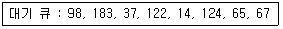
- 320
- 640
- 710
- 763
(정답률: 54%)
42. OS의 가상기억장치 관리에서 프로세스가 일정 시간동안 자주 참조하는 페이지들의 집합을 의미하는 것은?
- Thrashing
- Deadlock
- Locality
- Working Set
(정답률: 71%)
43. 프로세스가 자원을 기다리고 있는 시간에 비례하여 우선순위를 부여함으로써 무기한 문제를 방지하는 기법은?
- Aging
- Reusable
- Circular wait
- Deadly embrace
(정답률: 60%)
44. Public Key System에 대한 설명으로 틀린 것은?
- 공용키 암호화 기법을 이용한 대표적 암호화 방식에는 RSA가 있다.
- 암호화키와 해독키가 따로 존재한다.
- 암호화키와 해독키는 보안되어야 한다.
- 키의 분배가 용이하다.
(정답률: 61%)
45. 스레드(Thread)에 대한 설명으로 가장 거리가 먼 것은?
- 하나의 스레드는 상태를 줄인 경량 프로세스라고도 한다.
- 프로세스 내부에 포함되는 스레드는 공통적으로 접근 가능한 기억장치를 통해 효율적으로 통신한다.
- 스레드를 사용하면 하드웨어, 운영체제의 성능과 응용 프로그램의 처리율을 향상시킬 수 있다.
- 하나의 프로세스에는 하나의 스레드만 존재하여 독립성을 보장한다.
(정답률: 76%)
46. 주기억장치 배치 전략 기법으로 최적 적합 방법을 사용한다고 할 때, 다음과 같은 기억장소 리스트에서 10K 크기의 작업은 어느 기억공간에 할당되는가? (단, K=kilo이고, 탐색은 위에서부터 아래로 한다고 가정한다.).
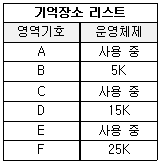
- B
- D
- F
- 어떤 영역에도 할당될 수 없다.
(정답률: 79%)
47. 데커(Dekker) 알고리즘에 대한 설명으로 틀린 것은?
- 교착상태가 발생하지 않음을 보장한다.
- 프로세스가 임계영역에 들어가는 것이 무한정 지연될 수 있다.
- 공유 데이터에 대한 처리에 있어서 상호배제를 보장한다.
- 별도의 특수 명령어 없이 순수하게 소프트웨어로 해결된다.
(정답률: 40%)
48. UNIX에 대한 설명으로 틀린 것은?
- 상당 부분 C 언어를 사용하여 작성되었으며, 이식성이 우수하다.
- 사용자는 하나 이상의 작업을 백그라운드에서 수행할 수 있어 여러 개의 작업을 병행 처리할 수 있다.
- 쉘(shell)은 프로세스 관리, 기억장치 관리, 입출력 관리 등의 기능을 수행한다.
- 두 사람 이상의 사용자가 동시에 시스템을 사용할 수 있어 정보와 유틸리티들을 공유하는 편리한 작업 환경을 제공한다.
(정답률: 69%)
49. Crossbar Switch Matrix에 관한 설명으로 가장 옳지 않은 것은?
- 각 기억장치마다 다른 경로를 사용할 수 있다.
- 시분할 및 공유버스 방식에서 버스의 숫자를 프로세서의 숫자만큼 증가시킨 구조이다.
- 두 개의 서로 다른 저장장치를 동시에 참조할 수 있다.
- 장치의 연결이 복잡해진다.
(정답률: 45%)
50. 파일 시스템의 기능에 대한 설명으로 가장 옳지 않은 것은?
- 사용자와 보조기억장치 사이에서 인터페이스를 제공한다.
- 사용자가 파일을 생성, 수정, 제거할 수 있도록 해준다.
- 적절한 제어 방식을 통해 타인의 파일을 공동으로 사용할 수 있도록 해준다.
- 하드웨어를 동작시켜 사용자가 작업을 편리하게 수행하도록 하는 프로그램이다.
(정답률: 51%)
51. 다음 기억장치 관리에 관한 설명에 가장 부합하는 기법은?
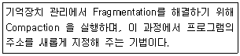
- Coalescing
- Garbage Collection
- Relocation
- Swapping
(정답률: 67%)
52. 다음 운영체제에 대한 설명 중 가장 옳지 않은 것은?
- 다중 사용자와 다중 응용프로그램 환경 하에서 자원의 현재 상태를 파악하고 자원 분배를 위한 스케줄링을 담당한다.
- CPU, 메모리 공간, 기억 장치, 입출력 장치 등의 자원을 관리한다.
- 운영체제의 종류로는 매크로 프로세서, 어셈블러, 컴파일러 등이 있다.
- 입출력 장치와 사용자 프로그램을 제어한다.
(정답률: 73%)
53. 은행가 알고리즘(Banker's Algorithm)은 교착상태의 해결 방법 중 어떤 기법에 해당하는가?
- Avoidance
- Detection
- Prevention
- Recovery
(정답률: 70%)
54. 교착상태가 발생할 수 있는 조건이 아닌 것은?
- Mutual exclusion
- Hold and wait
- Nonpreemption
- Linear wait
(정답률: 56%)
55. 다음의 페이지 참조 열(Page reference string)에 대해 페이지 교체 기법으로 FIFO를 사용할 경우 페이지 부재(Page Fault) 횟수는? (단, 할당된 페이지 프레임 수는 3이고, 처음에는 모든 프레임이 비어 있다.)
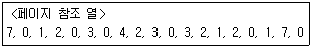
- 13
- 14
- 15
- 20
(정답률: 54%)
56. Relative Loader가 수행해야 할 기능으로 틀린 것은?
- 각 세그먼트가 주기억장치 내의 어느 곳에 위치할 것인가를 결정한다.
- 각 세그먼트를 주기억장치내의 할당된 장소에 넣는다.
- 각 세그먼트들을 연결한다.
- 각 세그먼트의 절대번지를 상대번지로 고친다.
(정답률: 50%)
57. 임계영역(Critical Section)에 대한 설명으로 가장 옳은 것은?
- 프로세스들의 상호배제(Mutual Exclusion)가 일어나지 않도록 주의해야 한다.
- 임계 영역에서 수행 중인 프로세스는 인터럽트가 가능한 상태로 만들어야 한다.
- 어떤 하나의 프로세스가 임계 영역 내에 진입한 후 다른 프로세스들은 일제히 임계영역으로 진입할 수 있다.
- 임계 영역에서의 작업은 최대한 빠른 속도로 수행되어야 한다.
(정답률: 47%)
58. FIFO 스케줄링에서 3개의 작업 도착시간과 CPU 사용시간(burst time)이 다음 표와 같다. 이 때 모든 작업들의 평균 반환시간 (turn around time)은? (단, 소수점 발생 시 정수 형태로 반올림한다.)
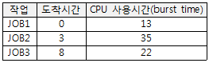
- 16
- 20
- 33
- 40
(정답률: 55%)
59. 프로세스(Process)의 정의로 옳지 않은 것은?
- PCB를 가진 프로그램
- 동기적 행위를 일으키는 주체
- 프로세서가 할당되는 실체
- 활동 중인 프로시저(Procedure)
(정답률: 65%)
60. 다음과 같은 프로세스가 차례로 큐에 도착하였을 때, SJF 정책을 사용할 경우 가장 먼저 처리되는 작업?
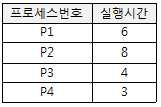
- P1
- P2
- P3
- P4
(정답률: 70%)
4과목: 소프트웨어 공학
61. 객체지향 테스트 중 구조적 기법에서의 단위 테스트(Unit Test)와 같은 개념은?
- 메소드
- 클래스
- 필드
- 서브시스템
(정답률: 55%)
62. 구현 단계에서의 작업 절차를 순서에 맞게 나열한 것은?
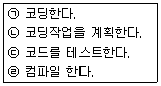
- ㉠-㉡-㉢-㉣
- ㉡-㉠-㉣-㉢
- ㉢-㉠-㉡-㉣
- ㉣-㉡-㉠-㉢
(정답률: 78%)
63. 화이트박스 테스트에 대한 설명으로 가장 옳지 않은 것은?
- 제품의 내부 요소들이 명세서에 따라 수행되고 충분히 실행되는가를 보장하기 위한 검사이다.
- 모듈 안의 작동을 직접 관찰한다.
- 프로그램 원시 코드의 논리적인 구조를 커버하도록 테스트 케이스를 설계한다.
- 화이트박스 테스트 기법에는 조건 검사, 루프 검사, 비교 검사 등이 있다.
(정답률: 56%)
64. 소프트웨어 위험의 대표적 특성으로 짝지어진 것 중 가장 적합한 것은?
- 연쇄작용, 확실성
- 불확실성, 손실
- 연쇄작용, 예측
- 확실성, 예측
(정답률: 73%)
65. Software Engineering의 Engineering이 가지는 의미와 가장 관계없는 것은?
- 예술성
- 경제성
- 보편타당성
- 적시성
(정답률: 77%)
66. 객체지향 기법에서 다음 설명에 해당하는 것으로 가장 옳은 것은?
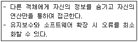
- Abstraction
- Inheritance
- Information Hiding
- Polymorphism
(정답률: 65%)
67. 모듈의 응집도(Cohesion)에 대한 설명으로 틀린 것은?
- 모듈의 응집도란 모듈안의 요소들이 서로 관련되어 있는 정도를 말한다.
- 기능적 응집도(Functional Cohesion)는 한 모듈 내부의 한 기능 요소에 의한 출력 자료가 다음 기능 원소의 입력 자료로서 제공되는 형태이다.
- 교환적 응집도(Communication Cohesion)는 동일한 입력과 출력을 사용하는 소작업들이 모인 모듈에서 볼 수 있다.
- 논리적 응집도(Logical Cohesion)는 유사한 성격을 갖거나 특정형태로 분류되는 처리요소들로 하나의 모듈이 형성되는 경우이다.
(정답률: 36%)
68. 소프트웨어 재공학의 주요활동 중 다음 설명에 해당하는 것은?
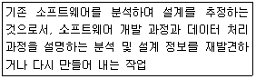
- Analysis
- Restructuring
- Reverse Engineering
- Migration
(정답률: 55%)
69. Putnam 모형을 기초로 해서 만든 자동화 추정 도구는?
- BYL
- SLIM
- ESTIMACS
- PERT
(정답률: 63%)
70. 자료 흐름도(DFD)를 작성하는데 지침이 될 수 없는 항목은?
- 자료 흐름은 처리(Process)를 거쳐 변환 될 때마다 새로운 이름을 부여한다.
- 어떤 처리(Process)가 출력자료를 산출하기 위해서는 반드시 입력 자료가 발생해야 한다.
- 자료저장소에 입력 화살표가 있으면 반드시 출력 화살표도 표시되어야 한다.
- 상위 단계의 처리(Process)와 하위 자료흐름도의 자료 흐름은 서로 일치되어야 한다.
(정답률: 50%)
71. 소프트웨어 품질보증에서 FTR의 지침 사항으로 가장 옳지 않은 것은?
- 논쟁과 반박을 제한하지 않는다.
- 자원과 시간 일정을 할당한다.
- 문제 영역을 명확히 표현한다.
- 모든 검토자들을 위해 의미 있는 훈련을 행한다.
(정답률: 72%)
72. 설계 기법 중 하향식 설계 방법과 상향식 설계 방법에 대한 비교 설명으로 가장 옳지 않은 것은?
- 하향식 설계에서는 통합 검사 시 인터페이스가 이미 정의 되어 있어 통합이 간단하다.
- 하향식 설계에서 레벨이 낮은 데이터 구조의 세부 사항은 설계 초기 단계에서 필요하다.
- 상향식 설계는 최하위 수준에서 각각의 모듈들을 설계하고 이러한 모듈이 완성되면 이들을 결합하여 검사한다.
- 상향식 설계에서는 인터페이스가 이미 성립되어 있지 않더라도 기능 추가가 쉽다.
(정답률: 50%)
73. 소프트웨어의 위기현상과 가장 거리가 먼 것은?
- 유지보수의 어려움
- 개발인력의 급증
- 성능 및 신뢰성의 부족
- 개발기간의 지연 및 개발비용의 증가
(정답률: 78%)
74. 객체지향 분석 방법론 중 E-R 다이어그램을 사용하여 객체의 행위를 모델링하며, 객체 식별, 구조식별, 주제 정의, 속성과 인스턴스 연결 정의, 연산과 메시지 연결 정의 등의 과정으로 구성되는 것은?
- Coad와 Yourdon 방법
- Booch 방법
- Jacobson 방법
- Wirfs-Brock 방법
(정답률: 58%)
75. LOC 기법에 의하여 예측된 총 라인수가 50000라인, 프로그래머의 월 평균 생산성이 200라인, 개발에 참여할 프로그래머가 10 인 일 때, 개발 소요 기간은?
- 25개월
- 50개월
- 200개월
- 2000개월
(정답률: 77%)
76. 다음 중 가장 약한 결합도(Coupling)는?
- Common Coupling
- Control Coupling
- External Coupling
- Stamp Coupling
(정답률: 64%)
77. 나선형 모형의 각 개발 단계에 대한 설명으로 가장 옳은 것은?
- Planning 단계에서는 위험 요소와 타당성을 분석하여 프로젝트의 추진 여부를 결정한다.
- Development 단계에서는 선택된 기능을 수행하는 프로토 타입을 개발한다.
- Risk Analysis 단계에서는 개발 목적과 기능 선택, 제약 조건 등을 결정하고 분석한다.
- Evaluation 단계에서는 고객 평가와 검증 과정을 수행하여 개발된 결과를 평가한다.
(정답률: 42%)
78. CASE의 주요기능으로 가장 옳지 않은 것은?
- S/W 라이프 사이클 전 단계의 연결
- 그래픽 지원
- 다양한 소프트웨어 개발 모형 지원
- 언어 번역
(정답률: 66%)
79. CPM 네트워크가 다음과 같을 때 임계경로의 소요기일은?
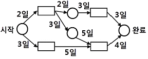
- 10일
- 12일
- 14일
- 16일
(정답률: 65%)
80. 공학적으로 잘 작성된 소프트웨어의 특성에 관한 설명으로 가장 옳지 않은 것은?
- 소프트웨어는 신뢰성이 높아야 하며 효율적이어야 한다.
- 소프트웨어는 사용자가 원하는 대로 동작해야 한다.
- 소프트웨어는 편리성이나 유지보수성에 점차 비중을 적게 두는 경향이 있다.
- 소프트웨어는 잠재적인 오류가 가능한 적어야 하며 유지보수가 용이해야 한다.
(정답률: 79%)
5과목: 데이터 통신
81. HDLC 프레임의 종류 중 정보프레임에 대한 흐름 제어와 오류 제어를 위해 사용되는 것은?
- I-Frame
- K-Frame
- S-Frame
- RK-Frame
(정답률: 40%)
82. IPv6의 주소체계로 거리가 먼 것은?
- Unicast
- Anycast
- Broadcast
- Multicast
(정답률: 61%)
83. TCP/IP에서 사용되는 논리주소를 물리주소로 변환시켜 주는 프로토콜은?
- TCP
- ARP
- ETP
- IP
(정답률: 71%)
84. 전송오류제어 중 오류가 발생한 프레임뿐만 아니라 오류검출 이후의 모든 프레임을 재전송하는 ARQ 방식은?
- Go-back-N ARQ
- Stop-and-Wait ARQ
- Selective Repeat ARQ
- Non-Selective Repeat ARQ
(정답률: 66%)
85. 10Base-5 이더넷의 기본 규격에 대한 설명으로 틀린 것은?
- 전송매체는 동축케이블을 사용한다.
- 최대 전송 거리는 50km이다.
- 전송방식은 베이스밴드 방식이다.
- 데이터 전송속도는 10Mbps이다.
(정답률: 58%)
86. 아날로그-디지털 부호화 방식인 송신측 PCM(Pulse Code Modulation)과정을 순서대로 옳게 나열한 것은?
- 표본화 → 양자화 → 부호화
- 양자화 → 부호화 → 표본화
- 부호화 → 양자화 → 표본화
- 표본화 → 부호화 → 양자화
(정답률: 62%)
87. 데이터 교환 방식 중 축적교환 방식이 아닌 것은?
- 메시지 교환
- 회선 교환
- 가상회선
- 데이터그램
(정답률: 43%)
88. 라우팅 프로토콜인 OSPF(Open Shortest Path First)에 대한 설명으로 옳지 않은 것은?
- 멀티캐스팅을 지원한다.
- 거리 벡터 라우팅 프로토콜이라고도 한다.
- 네트워크 변화에 신속하게 대처할 수 있다.
- 최단 경로 탐색에 Dijkstra 알고리즘을 사용한다.
(정답률: 52%)
89. 패킷교환 방식에 대한 설명으로 틀린 것은?
- 데이터그램과 가상회선 방식으로 구분된다.
- 저장 전달 방식을 사용한다.
- 전송하려는 패킷에 헤더가 부착된다.
- 노드와 노드 간에 물리적으로 전용통신로를 설정하여 데이터를 교환한다.
(정답률: 59%)
90. 이동통신 가입자가 셀 경계를 지나면서 신호의 세기가 작아지거나 간섭이 발생하여 통신 품질이 떨어져 현재 사용 중인 채널을 끊고 다른 채널로 절 체하는 것을 의미하는 것은?
- Mobile Control
- Location registering
- Hand off
- Multi-Path fading
(정답률: 59%)
91. ATM에 사용되는 ATM cell의 헤더와 유로부하(payload)의 크기는 각각 몇 옥텟(octet)인가?
- 헤더는 2옥텟, 유로부하는 47옥텟이다.
- 헤더는 3옥텟, 유로부하는 47옥텟이다.
- 헤더는 4옥텟, 유로부하는 48옥텟이다.
- 헤더는 5옥텟, 유로부하는 48옥텟이다.
(정답률: 32%)
92. OSI 7계층에서 물리적 연결을 이용해 신뢰성 있는 정보를 전송 하려고 동기화, 오류제어, 흐름제어 등의 전송에러를 제어하는 계층은?
- 데이터 링크 계층
- 물리 계층
- 응용 계층
- 표현 계층
(정답률: 60%)
93. SONET(Synchronous Optical Network)에 대한 설명으로 틀린 것은?
- 광전송망 노드와 망간의 접속을 표준화한 것이다.
- 다양한 전송기기를 상호 접속하기 위한 광신호와 인터페이스 표준을 제공한다.
- STS-12의 기본 전송속도는 622.08 Mbps이다.
- 프레임 중계서비스와 프레임 교환 서비스가 있다.
(정답률: 32%)
94. 192.168.1.222/28라는 IP가 소속되어 있는 네트워크 주소와 브로드캐스트 주소로 옳게 나열한 것은?
- 192.168.1.96, 192.168.1.127
- 192.168.1.192, 192.168.1.255
- 192.168.1.208, 192.168.1.223
- 192.168.1.224, 192.168.1.239
(정답률: 32%)
95. HDLC 링크 구성 방식에 따른 동작 모드에 해당하지 않는 것은?
- 정규 응답 모드(NRM)
- 비동기 응답 모드(ARM)
- 비동기 균형 모드(ABM)
- 정규 균형 모드(NBM)
(정답률: 63%)
96. 다음 그림은 어떤 변조 파형인가?
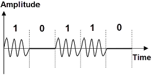
- DPSK
- FSK
- ASK
- PSK
(정답률: 47%)
97. Hamming distance가 5일 때 검출 가능한 에러 개수는?
- 4
- 5
- 6
- 7
(정답률: 46%)
98. HDLC에서 프레임의 시작과 끝을 정의하는 것은?
- 플래그
- 주소 영역
- 제어 영역
- 정보 영역
(정답률: 68%)
99. 동기식 문자 지향 프로토콜 프레임에서 전송될 문자의 시작을 나타내는 제어 문자는?
- DLE
- STX
- CRC
- SYN
(정답률: 65%)
100. 디지털 부호화 기술에서 음성신호의 통계적 특성을 이용하여 적응적으로 예측하고 양자화 하는 방식은?
- AM
- FM
- PM
- ADPCM
(정답률: 54%)
"원하는 정보와 그 정보를 어떻게 유도하는가를 기술하는 절차적 특성을 가진다."는 관계해석의 핵심적인 특징 중 하나입니다. 이는 관계 데이터 모델의 제안자인 코드(Codd)가 관계 데이터베이스에 적용할 수 있도록 설계하여 제안한 것입니다. 프레디킷 해석과 튜플 관계해석, 도메인 관계해석은 관계해석의 방법론 중 일부입니다.